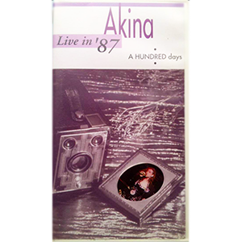

现场视频：第4张
发行年份：1993年
发行日期：8月25日
| 歌名 | 作词 | 作曲 |
|---|---|---|
| Opening | ||
| MIND GAME | 許瑛子 | 小林明子 |
| Don’t Tell Me This Is Love | BIDDU | BIDDU |
| Wait for me | SHOW | EUROX |
| 赤のエナメル | 竹内まりや | 竹内まりや |
| モザイクの城 | FUMIKO | 小林明子 |
| Mushroom dance | SANDII | 久保田真箏・井上ケン一 |
| 飾りじゃないのよ涙は | 井上陽水 | 井上陽水 |
| OH NO,OH YES! | 竹内まりや | 竹内まりや |
| 難破船 | 加藤登紀子 | 加藤登紀子 |
| BABYLON | SANDII | 久保田真箏 |
| ミックジャガーに微笑みを | 竹内まりや | 竹内まりや |
首发规格：VHS: WPVL-8159，LD: WPLL-8159
唱片公司：Warner Music Japan
再发行：
2001年5月23日 - DVD: WPB6-90014
2001年11月7日 - DVD: WPB6-90104
2004年11月3日 - DVD: WPBL-90044
2006年6月21日 - DVD: WPBL-90067
2007年1月24日 - DVD: WPBL-90090~4
2014年6月18日 - BD: WPXL-90054